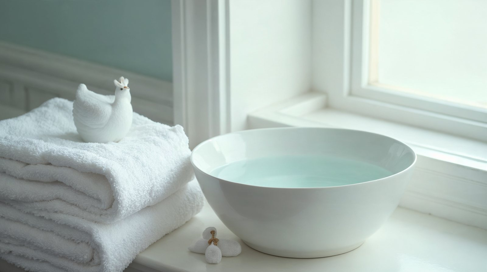
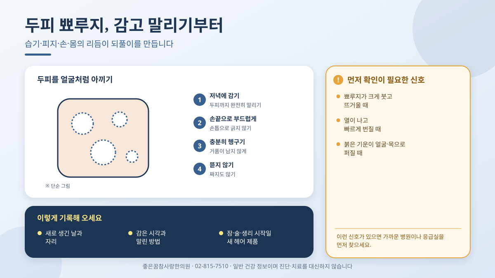

이종호 한의사 감수좋은꿈참사랑한의원 대표원장 (한의사 면허번호 19769)발행 2026-11-26 · 수정 2026-11-26
이 글의 차례
샴푸를 하다가 손끝에 오돌토돌한 것이 걸립니다. 살짝 눌러 보니 따끔하게 아프고, 며칠 뒤에는 다른 자리에도 하나둘 올라옵니다. 머리를 빗을 때마다 빗살에 걸려 신경이 쓰이고, 무심코 손이 가서 뜯다 보면 딱지가 앉아 더 오래갑니다.
진료실에서 두피 뾰루지 이야기를 꺼내시는 분들은 대개 꽤 오래 참다가 오십니다. 머리카락에 가려 남들 눈에는 잘 띄지 않으니 그냥 넘기다가, 자꾸 되풀이되고 가렵고 아파서야 걱정이 되신다고 합니다.
두피는 얼굴보다 피지샘이 많고 머리카락이 빽빽해 땀과 피지가 쉽게 머무는 곳입니다. 모자나 헬멧을 오래 쓰거나, 머리를 감고 제대로 말리지 않거나, 잠이 부족하고 긴장이 많은 시기에는 두피도 쉽게 예민해집니다.
이 글에서는 두피 뾰루지가 어떤 종류로 나뉘는지, 왜 자꾸 되풀이되는지, 머리 감기와 말리기를 어떻게 바꿔 볼 수 있는지, 진료실에서는 무엇을 함께 살피는지를 차례로 풀어 보겠습니다.
두피 뾰루지는 어떤 종류가 있나요?
두피에 올라오는 뾰루지는 한 가지가 아닙니다. 모양과 자리, 함께 오는 증상에 따라 크게 몇 갈래로 나눠 볼 수 있고, 갈래에 따라 생활에서 신경 쓸 부분도 조금씩 다릅니다.
가장 흔한 것은 모낭염입니다. 머리카락이 나오는 모낭 입구에 염증이 생겨, 머리카락 하나를 중심으로 붉은 좁쌀이나 노란 고름이 잡힌 뾰루지가 생깁니다. 누르면 따끔하게 아프고, 여러 개가 흩어져 올라오는 경우가 많습니다.
여드름처럼 피지가 막혀 생기는 뾰루지도 있습니다. 이마 경계나 뒷머리 아래쪽처럼 피지가 많은 자리에 잘 생기고, 얼굴이나 등에 여드름이 있는 분에게서 함께 보이는 경우가 많습니다.
지루성 두피염은 두피가 기름지면서 붉어지고, 누런 비듬과 각질이 끼며 가려운 것이 특징입니다. 이 바탕 위에 뾰루지가 함께 올라오기도 해서, 뾰루지만이 아니라 두피 전체의 상태를 함께 봐야 합니다.
새로 바꾼 샴푸나 염색약, 헤어 제품에 두피가 반응해 붉은 좁쌀과 가려움이 생기는 경우도 있습니다. 제품을 바꾼 시기와 뾰루지가 생긴 시기가 겹친다면 이쪽을 먼저 생각해 봅니다.
왜 두피 뾰루지가 자꾸 되풀이될까요
첫째는 습기와 열입니다. 머리를 감고 젖은 채로 잠들거나, 모자와 헬멧을 오래 쓰거나, 운동 뒤 땀이 밴 채로 오래 있으면 두피가 축축하고 따뜻한 상태로 머뭅니다. 이런 환경에서는 모낭 주변에 염증이 생기기 쉽습니다.
둘째는 피지와 씻는 습관입니다. 피지가 많은 분이 머리를 충분히 헹구지 않거나, 반대로 너무 자주 세게 감아 두피가 예민해지면 뾰루지가 되풀이되기 쉽습니다. 샴푸나 컨디셔너가 두피에 남아 있는 것도 자극이 됩니다.
셋째는 손입니다. 뾰루지가 신경 쓰여 자꾸 만지고 뜯으면 손에 있는 균이 옮겨 가고, 상처가 아물기 전에 또 자극을 받아 오래갑니다. 손톱으로 긁어 생긴 작은 상처가 새 뾰루지의 시작이 되기도 합니다.
넷째는 몸의 리듬입니다. 잠이 부족하고 긴장이 많은 시기, 기름지고 단 음식과 술이 잦은 시기, 생리 전후처럼 몸의 리듬이 흔들릴 때 두피 뾰루지가 함께 늘어나는 분이 많습니다. 얼굴 여드름이 함께 심해지는 경우도 흔합니다.
다섯째는 계절입니다. 여름에는 땀과 습기 때문에, 겨울에는 모자를 오래 쓰고 실내가 건조해 두피가 예민해지면서 뾰루지가 늘어날 수 있습니다. 계절이 바뀔 때마다 되풀이된다면 그 흐름도 함께 기록해 두시면 좋습니다.
내 두피 뾰루지는 어느 쪽에 가까울까요?
거울 두 개를 이용하거나 가족에게 부탁해 두피를 살펴보세요. 휴대폰으로 사진을 찍어 보는 것도 방법입니다.
- 머리카락 하나를 중심으로 붉은 좁쌀이나 노란 고름이 잡혀 있는지
- 이마 경계나 뒷머리 아래처럼 피지가 많은 자리에 몰려 있는지
- 뾰루지 주변 두피가 기름지고 누런 비듬과 각질이 끼어 있는지
- 새 제품을 쓰거나 염색한 뒤부터 붉고 가려워졌는지
- 은백색 두꺼운 각질이 경계가 분명하게 덮여 있는지
마지막처럼 경계가 분명한 두꺼운 각질이 있다면 건선을 함께 생각해야 해서 따로 살핍니다. 두피에 만져지는 단단한 혹이 오래 그대로 있다면 뾰루지보다 피지낭종 같은 다른 혹일 수 있어 피부과에서 확인받으시길 권합니다.
비슷해 보이지만 다른 두피의 불편
두피가 아프고 화끈거리지만 눈에 보이는 뾰루지가 없다면 두피 통증을 따로 살핍니다. 머리를 묶는 습관, 긴장, 신경의 예민함과 관련된 경우가 많습니다.
비듬이 많고 가려운 것이 주된 불편이라면 지루성 두피염이나 건조한 두피를 먼저 생각합니다. 뾰루지는 그 위에 덧붙여 생기는 경우가 많아, 바탕의 두피 상태를 먼저 다스리는 것이 중요합니다.
머리카락이 동전 크기로 빠진 자리가 보인다면 원형탈모처럼 다른 이유를 함께 살펴야 합니다. 뾰루지와 탈모가 함께 있다면 피부과 진료를 함께 받아 보시길 권합니다.
생활에 따라 달라지는 두피 뾰루지
헬멧이나 안전모를 오래 쓰는 일을 하시는 분, 운동을 매일 하며 땀을 많이 흘리시는 분은 두피가 축축한 시간이 길어 모낭염이 생기기 쉽습니다. 헬멧 안쪽 패드를 자주 빨고, 땀을 흘린 뒤에는 가능한 한 빨리 씻고 말리시는 것이 좋습니다.
수험생이나 마감에 쫓기는 직장인처럼 잠이 부족하고 긴장이 많은 분은 두피와 얼굴에 뾰루지가 함께 늘어나는 흐름을 자주 보입니다. 이 시기에는 손으로 머리를 자꾸 만지는 습관도 함께 생기기 쉽습니다.
밤늦게 머리를 감고 바로 잠드는 습관이 있는 분도 많습니다. 젖은 머리로 베개에 누우면 두피가 밤새 축축하게 머물러 뾰루지가 되풀이되기 쉽습니다. 가능하면 저녁 일찍 감고 충분히 말린 뒤 잠자리에 드세요.
두피 뾰루지가 머리카락에도 영향을 주나요?
두피 뾰루지가 생기면 머리카락이 빠지지는 않을까 걱정하시는 분이 많습니다. 가벼운 모낭염이나 여드름처럼 얕은 뾰루지는 염증이 가라앉으면 그 자리의 머리카락도 다시 자라는 경우가 대부분이라, 지나치게 걱정하지 않으셔도 됩니다.
다만 같은 자리에 깊은 염증이 자꾸 되풀이되거나, 손으로 뜯고 짜서 상처가 깊어지면 흉이 남으면서 그 자리의 머리카락이 가늘어지거나 비어 보일 수 있습니다. 그래서 뾰루지를 건드리지 않고 염증이 깊어지지 않게 하는 것이 머리카락을 지키는 데에도 중요합니다.
뾰루지와 함께 머리카락이 한꺼번에 많이 빠지거나, 빈 자리가 점점 넓어진다면 뾰루지와는 다른 이유를 함께 살펴야 할 수 있어 피부과 진료를 함께 받아 보시길 권합니다.
먼저 이렇게 여쭙니다
두피 뾰루지로 오시면 저는 대략 이런 순서로 여쭙니다. 떠오르는 대로 편하게 말씀해 주세요.
- 언제부터 뾰루지가 생겼고, 주로 어느 자리에 생기나요?
- 가려운가요, 아픈가요, 고름이 잡히나요?
- 머리는 하루 중 언제, 얼마나 자주 감고 어떻게 말리나요?
- 최근 샴푸나 헤어 제품을 바꾸거나 염색, 파마를 하셨나요?
- 모자나 헬멧을 오래 쓰시나요?
- 얼굴이나 등, 가슴에도 뾰루지가 있나요?
가족 가운데 지루성 피부염이나 여드름, 건선이 있는 분이 계신지도 여쭙니다. 잠과 식사, 술, 생리 주기도 함께 여쭙니다. 뾰루지가 늘어나는 시기와 몸의 리듬이 흔들리는 시기가 겹치는 경우가 많기 때문입니다.
일상에서 먼저 해 볼 수 있는 것
두피 뾰루지는 감고 말리는 습관을 바꾸는 것부터 시작하시면 됩니다. 아래 가운데 할 수 있는 것을 골라 보세요.
- 머리는 저녁에 감고, 잠들기 전 두피까지 완전히 말리기
- 샴푸는 손바닥에서 거품을 낸 뒤 손끝으로 두피를 부드럽게 문지르기
- 샴푸와 컨디셔너는 충분히 헹구고, 컨디셔너는 두피에 닿지 않게 쓰기
- 드라이기는 찬바람이나 미지근한 바람으로 두피에서 조금 떨어뜨려 쓰기
- 베개 커버는 자주 갈고, 모자와 헬멧 안쪽도 자주 빨기
- 뾰루지를 손으로 뜯거나 짜지 않기
손톱으로 두피를 긁듯이 감는 습관은 작은 상처를 내기 쉽습니다. 손가락 끝의 볼록한 부분으로 두피를 문지르듯 감아 주세요. 뜨거운 물보다 미지근한 물이 두피 자극을 줄이는 데 좋습니다. 감는 시간은 길지 않아도 괜찮지만, 헹구는 시간은 넉넉히 잡아 거품이 남지 않게 해 주세요.
새 헤어 제품을 쓴 뒤 뾰루지가 늘었다면 그 제품을 잠시 쉬어 보세요. 왁스나 스프레이 같은 제품은 두피에 닿지 않게 머리카락 끝 쪽에만 쓰고, 그날 저녁에는 꼭 씻어 내시는 것이 좋습니다.
식사도 함께 살펴보세요. 기름지고 단 음식, 늦은 야식과 술이 잦은 시기에 뾰루지가 늘어난다면 저녁 식사를 조금 가볍게 하고 잠드는 시각을 일정하게 맞추는 것부터 시작해 보시길 권합니다.

피하면 좋은 습관
뾰루지가 신경 쓰인다고 하루에 여러 번 세게 감는 것은 오히려 두피를 예민하게 만들 수 있습니다. 하루 한 번, 부드럽게 감고 잘 말리는 것이 기본입니다.
인터넷에서 본 방법으로 두피에 이것저것 바르거나, 집에서 바늘로 뾰루지를 터뜨리는 것은 권하지 않습니다. 염증이 깊어지거나 흉이 남을 수 있습니다.
모자를 쓴 채로 오래 땀을 흘리고 바로 벗지 않는 습관, 젖은 머리를 수건으로 감싸 오래 두는 습관도 두피를 축축하게 만듭니다. 수건으로는 물기를 눌러 닦아 내고 바로 말려 주세요.
한의원에서 함께 살필 수 있는 경우
- 두피 뾰루지가 몇 주 이상 되풀이되며 가렵거나 아픈 경우
- 잠이 부족하거나 긴장이 많은 시기에 두피와 얼굴 뾰루지가 함께 늘어나는 경우
- 두피가 기름지고 붉으며 비듬과 뾰루지가 함께 있는 경우
- 생리 전후나 술 다음 날 두피 뾰루지가 심해지는 경우
- 열이 위로 오르는 느낌과 함께 얼굴과 두피가 쉽게 붉어지는 경우
좋은꿈참사랑한의원에서는 진찰한 내용을 바탕으로 생활에서 바꿔 볼 것과 함께 침 치료, 한약 상담 가운데 지금 상태에 맞는 것을 정합니다. 두피만이 아니라 잠과 소화, 몸의 열과 긴장을 함께 살피는 경우가 많고, 한약을 상의할 때는 드시는 약을 모두 확인한 뒤 신중하게 정합니다.
고름이 잡힌 뾰루지가 넓게 번지거나 연고와 먹는 약이 필요한 상태로 보이면 피부과 진료를 함께 받아 보시길 권합니다. 피부과에서 받은 약은 상의 없이 멈추지 않습니다.
이렇게 기록해 오시면 상담이 쉬워집니다
두피 뾰루지는 생활의 흐름을 그대로 따라가는 경우가 많습니다. 2주 정도 간단히 적어 보세요.
- 뾰루지가 새로 생긴 날과 자리
- 머리 감은 시각과 말린 방법
- 모자나 헬멧을 오래 쓴 날, 땀을 많이 흘린 날
- 잠든 시각과 깬 시각
- 기름진 음식이나 술을 먹은 날, 생리 시작일
- 새로 쓴 헤어 제품
기록을 나란히 놓고 보면 뾰루지가 늘어난 날이 젖은 머리로 잠든 날, 잠이 부족한 날, 술 마신 날과 겹치는 경우를 자주 봅니다. 그 연결이 무엇부터 바꿀지를 알려 줍니다. 두피 사진은 같은 자리를 같은 조명에서 일주일에 한두 번 찍어 두시면 변화를 비교하기 쉽습니다.
두피도 얼굴처럼 아껴 주세요
두피는 머리카락에 가려 잘 보이지 않다 보니 얼굴만큼 신경 쓰지 않게 됩니다. 하지만 얼굴 피부와 이어진 같은 피부이고, 오히려 땀과 피지가 더 쉽게 머무는 자리입니다. 얼굴을 씻고 말리듯 두피도 부드럽게 씻고 잘 말려 주세요.
이번 주에는 머리를 감은 뒤 두피까지 완전히 말리고 잠자리에 드는 습관 하나만 시작해 보세요. 다음에 오실 때 기록과 두피 사진을 함께 보여 주시면, 거기서부터 함께 살펴보겠습니다. 남들 눈에 잘 띄지 않는 불편이라 혼자 참아 오셨다면, 이제는 편하게 꺼내 놓으셔도 괜찮습니다.
이런 증상은 먼저 확인이 필요합니다
- 두피 뾰루지가 크게 붓고 뜨거우며 열이 나고 빠르게 번지는 경우
- 다친 자리나 뾰루지 주변의 붉은 기운이 얼굴이나 목으로 퍼지고 몸이 심하게 처지는 경우
이런 신호가 있으면 한의원보다 가까운 병원이나 응급실을 먼저 찾으세요.
함께 읽으면 좋은 글
- 털이 난 자리마다 붉은 뾰루지와 고름이 자꾸 올라오는 모낭염은 어떻게 살피나요?
- 두피가 금방 기름지고 가려울 때, 지루성 두피염까지 어떻게 살피나요?
- 두피에 비듬이 많고 가렵고 붉을 때는 어떻게 살피나요?
- 머리를 빗거나 감을 때 두피가 아프고 화끈거리는 것은 어떻게 살피나요?
- 어른이 되어 턱과 볼에 붉고 아픈 여드름이 되풀이되는 성인 여드름은 어떻게 살피나요?

여쭙는 것
- 언제부터 뾰루지가 생겼고, 주로 어느 자리에 생기나요?
- 가려운가요, 아픈가요, 고름이 잡히나요?
- 머리는 하루 중 언제, 얼마나 자주 감고 어떻게 말리나요?
생활에서 해 볼 것
- 머리는 저녁에 감고, 잠들기 전 두피까지 완전히 말리기
- 샴푸는 손바닥에서 거품을 낸 뒤 손끝으로 두피를 부드럽게 문지르기
- 샴푸와 컨디셔너는 충분히 헹구고, 컨디셔너는 두피에 닿지 않게 쓰기
한의원에서 함께 살필 것
- 두피 뾰루지가 몇 주 이상 되풀이되며 가렵거나 아픈 경우
- 잠이 부족하거나 긴장이 많은 시기에 두피와 얼굴 뾰루지가 함께 늘어나는 경우
- 두피가 기름지고 붉으며 비듬과 뾰루지가 함께 있는 경우
먼저 확인이 필요한 신호
- 두피 뾰루지가 크게 붓고 뜨거우며 열이 나고 빠르게 번지는 경우
- 다친 자리나 뾰루지 주변의 붉은 기운이 얼굴이나 목으로 퍼지고 몸이 심하게 처지는 경우
한눈에 보는 표
| 구분 | 핵심 |
|---|---|
| 여쭙는 것 | 언제부터 뾰루지가 생겼고, 주로 어느 자리에 생기나요? 가려운가요, 아픈가요, 고름이 잡히나요? |
| 생활에서 해 볼 것 | 머리는 저녁에 감고, 잠들기 전 두피까지 완전히 말리기 샴푸는 손바닥에서 거품을 낸 뒤 손끝으로 두피를 부드럽게 문지르기 |
| 한의원에서 함께 살필 것 | 두피 뾰루지가 몇 주 이상 되풀이되며 가렵거나 아픈 경우 잠이 부족하거나 긴장이 많은 시기에 두피와 얼굴 뾰루지가 함께 늘어나는 경우 |
| 먼저 확인이 필요한 신호 | 두피 뾰루지가 크게 붓고 뜨거우며 열이 나고 빠르게 번지는 경우 다친 자리나 뾰루지 주변의 붉은 기운이 얼굴이나 목으로 퍼지고 몸이 심하게 처지는 경우 |
자주 묻는 질문
두피 뾰루지는 샴푸를 바꾸면 없어지나요?
새 제품 때문에 생긴 반응이라면 제품을 쉬는 것이 도움이 될 수 있습니다. 하지만 감고 말리는 습관, 잠과 식사도 함께 영향을 주니 샴푸만 바꾸기보다 습관을 함께 살펴보세요.
두피 뾰루지를 짜도 되나요?
권하지 않습니다. 손에 있는 균이 옮겨 가거나 염증이 깊어지고 흉이 남을 수 있습니다. 고름이 크게 잡혔다면 피부과에서 처치를 받아 보세요.
머리는 아침에 감는 게 좋나요, 저녁에 감는 게 좋나요?
하루 동안 쌓인 땀과 피지를 씻어 내고 충분히 말린 뒤 잘 수 있다면 저녁이 좋습니다. 저녁에 감으신다면 두피까지 완전히 말리고 잠자리에 드세요.
피부과 약을 먹는 중인데 한의원 진료를 같이 받아도 되나요?
드시는 약을 알려 주시면 그에 맞춰 진료 방향을 정합니다. 피부과에서 받은 약은 상의 없이 멈추지 마시고, 한약을 상의할 때는 드시는 약을 모두 확인한 뒤 신중하게 정합니다.
스트레스를 받으면 두피 뾰루지가 늘어나는 것 같아요.
잠이 부족하고 긴장이 많은 시기에 두피와 얼굴 뾰루지가 함께 늘어나는 분이 많습니다. 잠드는 시각을 일정하게 맞추는 것부터 시작해 보시고, 진료 때 요즘의 긴장도 함께 들려주세요.
좋은꿈참사랑한의원은 재진 때 지난번 이야기부터 이어서 여쭙니다. 진료시간과 예약은 오시는 길에서 확인하세요.
어디서 상담받을 수 있나요?
좋은꿈참사랑한의원은 서울 동작구 만양로2길 2 신성빌딩 3층·5층(서울 동작구 상도동, 7호선 상도역 3번 출구 근처)에 있습니다. 한의사 3명(이종호 대표원장, 조영기 수석진료원장, 정원영 진료원장)이 진료합니다. 진료시간은 평일 09:30~20:00(점심 13:00~14:00), 토·일·공휴일 09:30~15:00이며, 방문 전 전화로 확인을 권합니다. 예약은 네이버 예약, 카카오톡 상담, 전화 02-815-7510로 받습니다.
이 글은 일반적인 건강 정보이며 개인의 진단이나 치료를 대신하지 않습니다. 증상이 있거나 복용 중인 약이 있다면 진료를 통해 확인하세요. 치료 효과는 개인마다 다를 수 있습니다.
작성 기준: 일반적으로 알려져 있는 건강 정보를 참고해 정리했습니다(대표원장 감수). 증상 기록은 1~2주 동안 하루 1회, 비슷한 시간에 적어 오시면 지난 상태와 비교하기 쉽습니다.